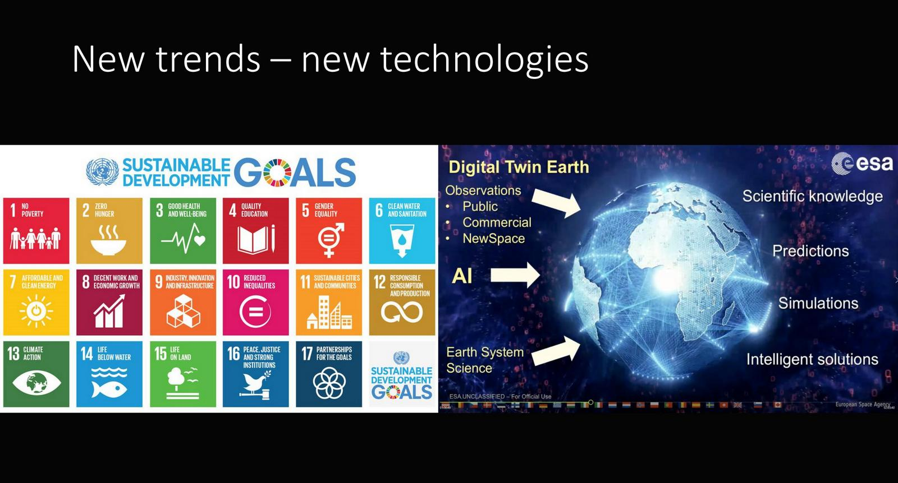
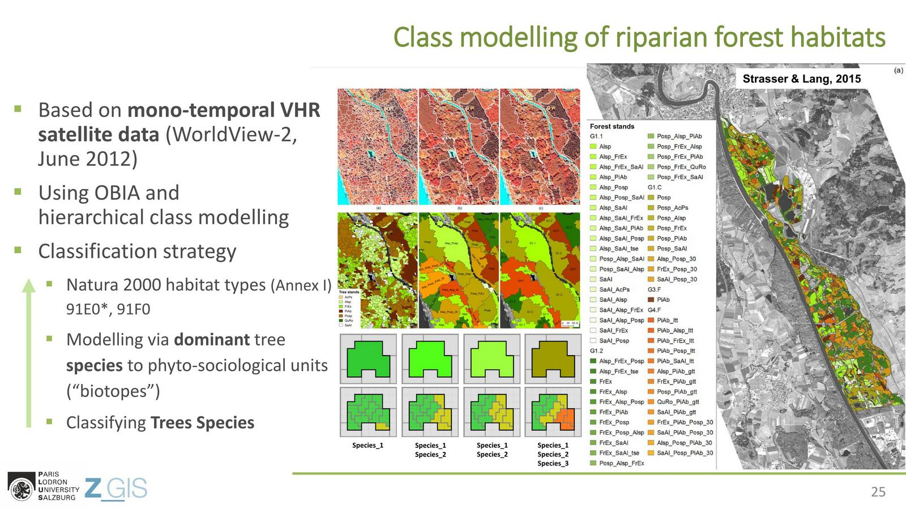
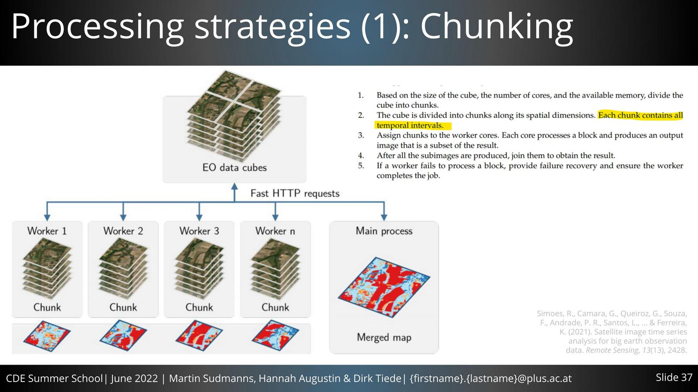
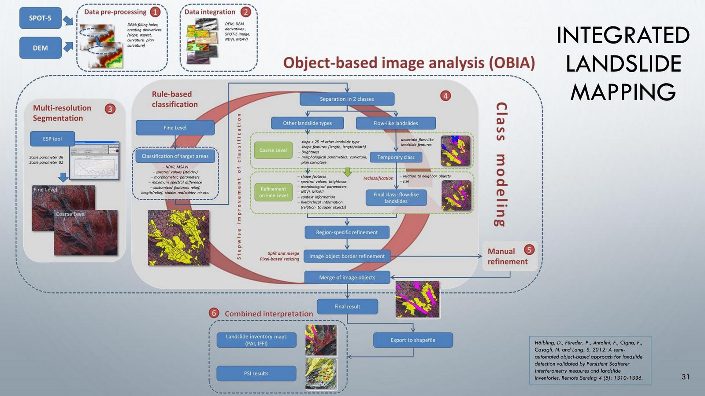
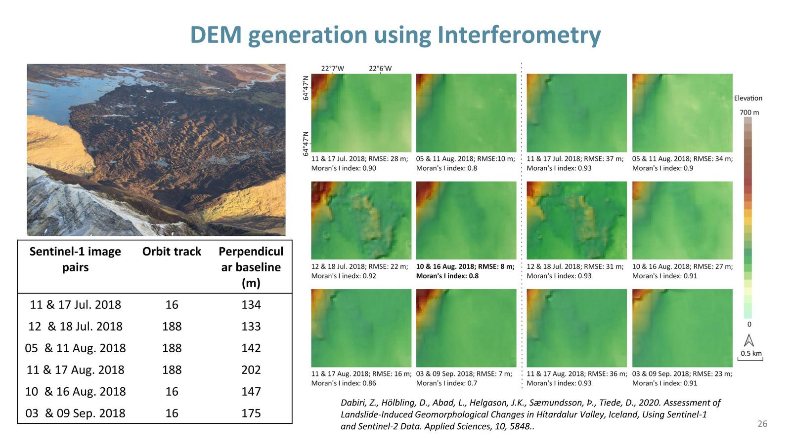
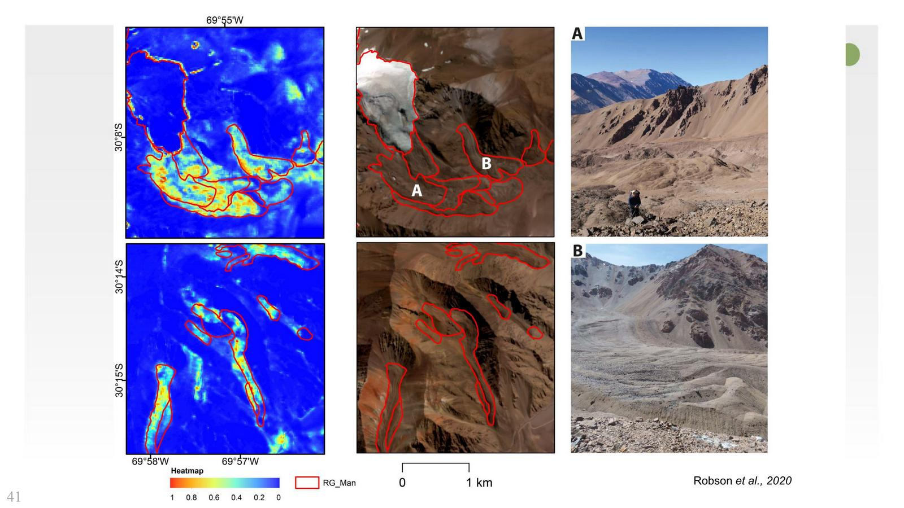
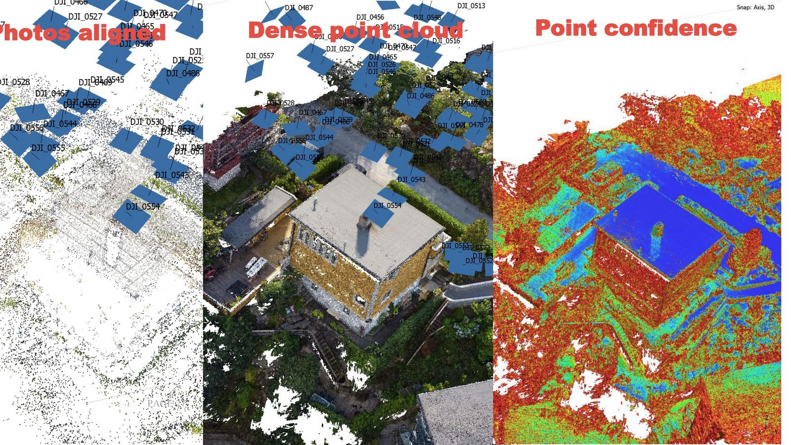
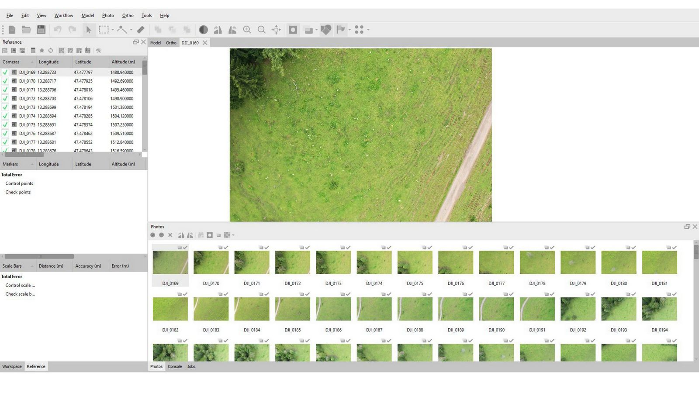
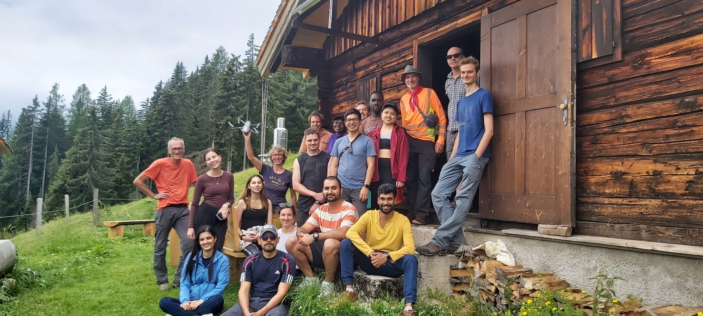

The Summer School 2022 “Multi-Sensor Earth Observation in Practice” aimed to introduce the Earth Observation tools and concepts that are vital to address environmental challenges we are facing around the world. A framework modified by the organizers attempted to create a meaningful appealing set of lectures, practices and one-day hiking tour not merely intended to provide top notch series of lectures, but also indirectly remind the participants the importance of what they are handling and getting along. Starting from presenting the Environmental policies and related organizations, to getting familiar with approaches to deal with natural and even artificial phenomenon, the total 5-day summer school ended but yet continued with GI_Salzburg22 conference.

Day 1
“EO for addressing key
environmental challenges” by Stefan Lang,
introduced the environmental policies
from the past to present
and the upcoming new trends and technologies.
“EO based biotope type
mapping” by Thomas Strasser,
mentioned overlapping the various inputs such as remote
sensing data, multi-temporal information, monitoring
season,
knowledge-base that influence significantly
on the desired habitat mapping.
Two presentation regarding
“Satellite Image Time Series
in the Big EO Data Context”, and “Investigating
Surface
Challenges Using the Austrian Semantic EO Data Cube
Sen2cube.at “ by
Dirk Tiede, Martin Sudmanns, and
Hannah Augustin pointed out the essential
needs and
characteristics of data cube and represented briefly
their
state-of-the-art sen2cube.
Day 2
“Landslide Mapping and
Monitoring Using Remote Sensing”
by Daniel Höbling, presented background
information about
landslides, how remote sensing provides opportunity for
landslide investigation through different methods. The
lecture influenced
significantly on our final project for the
course Application Development (Object-based
Image Analysis)
that could be visited here.
“Radar Interferometry:
Introduction and Applications”
by Zahra Dabiri, recapped the basics of radar data,
SAR,
Sentinel-1 SAR data, Interferometry SAR (InSAR), their
applications and
working with SNAP toolbox for DEM
generation.
Day 3
“Cryospheric Mapping
with Remote Sensing” by
Benjamin Aubrey Robson, highlighted what cryosphere
is,
the importance of glaciers, and approaches and challenges
to map the cryosphere
with remote sensing data, such as
deep learning and OBIA.
“UAV Mapping: Theory
and Practical Considerations” by
Benjamin Aubrey Robson, the lecture was about
the
photogrammetry principles, UAV-based monitoring,
practices and the use of
Agisoft software for producing the
outputs that could be achieved from the
acquired data.
Day 4
A field trip to
Werfenweg, located in the state of Salzburg with
around 50 kilometers distance
from the city of Salzburg.
The mission accomplished with hours of hiking and
data
collection practices using drones and tools related to collect
Ground
Control Points.
Day 5
The last day of the
summer school went through the hands-on
session with Benjamin Aubrey Robson
about UAV data processing
using Agisoft software to generate Digital Surface
Model. At the end,
My group presented about UAV Mapping that
Could be visited here.
In addition, outputs of the hands-on session has been applied in the
final project of the course Application Development (Object-based
Image Analysis),
could be visited here.








